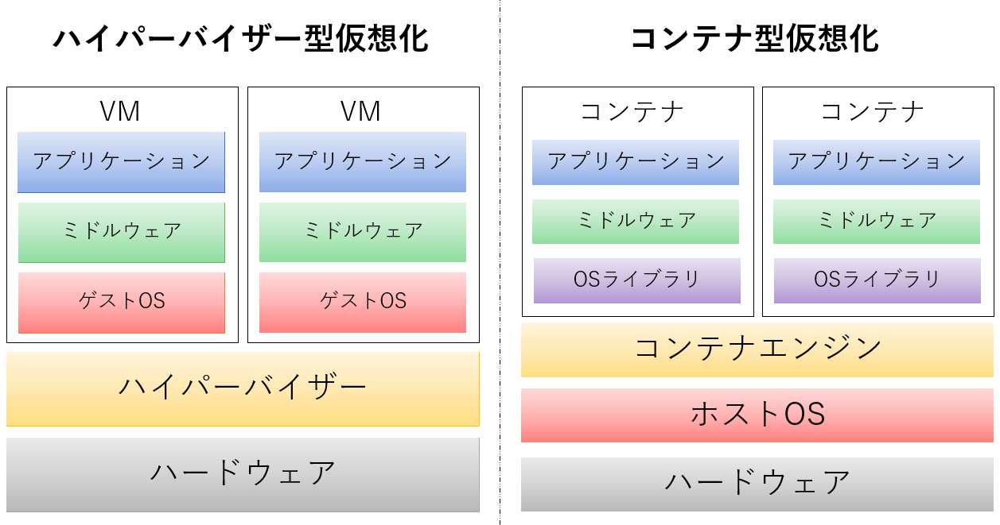

仮想マシン（VM）
仮想マシンとは，専用の仮想化ソフトウェアによって物理マシン上に作成され，仮想コンピュータシステムとして機能する仮想環境のこと．VMを使うことで，複数の異なるOSを1台のコンピュータ上で同時に実行可能となる．これにより，計算機リソースを柔軟に管理することが可能である．
VMは，物理マシンと同様に独自のOSやストレージ，ネットワーク等を備えており，同ホスト上で実行されている他のVMから完全に分離されている．
〇仮想マシンの種類
- ホストOS型
- OS上に土台となる仮想化ソフトウェアをインストールし，そのソフトウェア上でVMを稼働させる方式．既存のマシンでVMが利用できるが，ホストOSと仮想化ソフトウェアを動作させるため，動作速度の低下や余分なリソースの消費がネックである．ホストOSの仮想化ソフトウェアの例としては，「VMware Fusion」「Oracle VM Virtualbox」などがある，
- ハイパーバイザー型
- ハイパーバイザーと呼ばれる仮想化ソフトウェアを，サーバに直接インストールし，VMを稼働させる方式．ホストOSが不要な為，ハードウェアを直接制御することができ、VMの速度低下を最小限に抑えることが可能である．また，複数のVMを効率的に稼働させるための仕組みが搭載されている．ハイパーバイザーの例としては，「Linux KVM」「Microsoft Hyper-V」などがある．
コンテナ型仮想化
コンテナ型仮想化技術とは，コンテナエンジンと呼ばれるプロセスを通して，ホストOSのカーネルを共有することで計算機リソースを隔離し、仮想的な空間を作り出す技術のこと．VMがハードウェア全体を論理的に実行するのに対し、コンテナはOSは共通のカーネルを利用し、アプリケーションの実行環境だけを別々のものとして分離する．
注意：カーネル上で動作しているコンテナは単一のカーネルを共有しているため、ホストOSと異なるOSのコンテナを作成することはできない．（Linuxの場合Linux, Windowsの場合はWindowsのコンテナを作成できる．）
コンテナとVMの違い
〇実行環境
VMとコンテナの違いの一つは，上記にあるように「OSカーネルを複数実行可能かどうか」である．VMでは，各VM毎に別々のOSカーネルを実行できる．一方で，コンテナは単一のOSカーネルしか実行することができず，単一のOSカーネル上で複数のコンテナが動作することになる．また，VMはカーネル空間とユーザー空間の両方を分離しているのに対し，コンテナはユーザー空間のみを分離している．（※）※カーネル空間：カーネル領域，ユーザー空間：アプリケーションが動作している領域
〇起動速度
もう一つの違いは，「起動速度」である，VMの場合，OSカーネルの起動からシステムに必要なプロセスの実行，アプリケーションの実行のように，システムの起動が完了するまでに様々な処理が必要である．一方で，コンテナの場合，OSカーネルとシステムプロセスの起動は完了しているため，アプリケーションプロセスの実行処理だけで済む．この特徴を活かし，システム開発からテスト，本番環境へのデプロイまでを高速に行うことができるため，コンテナはDevOpsと相性が良いとされている．